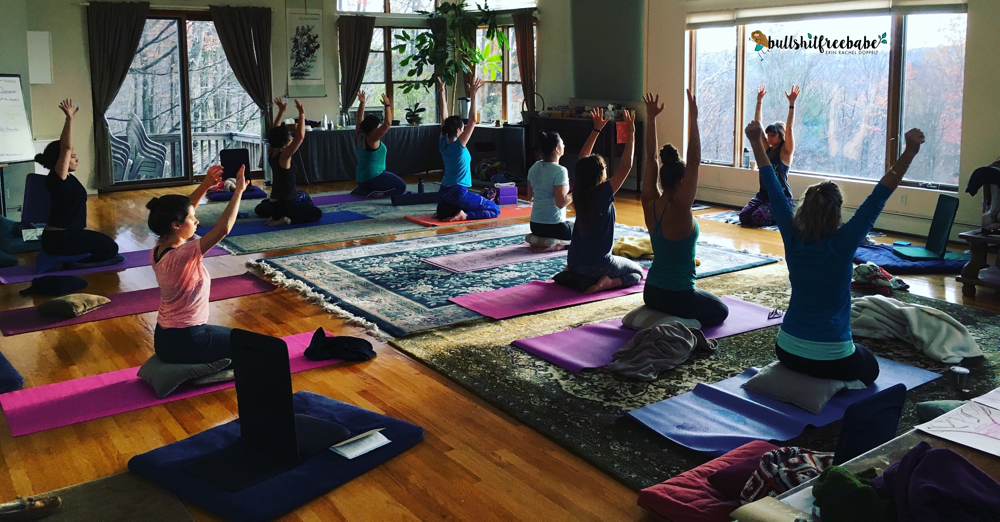

<section>
<p>

<section class="grid">
  <div class="col-8">

  <h2>Erin Travels around the GLOBE Leading Workshops derived from the teachings she learned while living in The Mid East + South East Asia, plus her Masters Studies at Columbia University.</h2>
  <h3>Conflict Competence:</h3>

  <p>
    How to hold space for conversations that involved conflict. Examining ten basic universal values and prioritizing their significance to yourself and your community. Techniques to stay calm and centered when in situations of conflict. Zooming out and seeing the perceptive of the person opposite your own conflict.
  </p>

  <h3>Emotional Intelligence:</h3>

  How do we feel and think about our current human experience. Evaluating our own empathy, motivation, self-regulation and self-awareness. What does it mean to have a high EQ and how to use this to better serve your community and yourself.

  <h3>Soul Mapping:</h3>

  <p>
    Looking into the spiritual development of the soul across a lifespan. What experiences have nourished us in the past and building a “soul program” to live intentionally and heart-centered. Discovering our inner values and desires and creating small measurable goals to reach those markers.
  </p>

  <h3>Sacred Nutrition:</h3>

  <p>
    How you feed your body is form of Self-Improvement or Self-destruction. Delving into the psychology behind eating and why we crave and choose certain foods. The types of foods that optimize functionality, overall health and high performance.

  </p>
  <h3>Spiritual Yoga:</h3>

  <p>
    Flowing in sacred geometry, honoring all four corners of the mat and moving with an open heart. Options for high intensity, heart pounding Vinyasa flow or a restorative, deeper stretch. Open to beginners and advanced yogis.

  </p>
  <h3>Accounting of the Soul Meditation:</h3>

  <p>
    Active Meditation for a deep inner check in to self and our compulsive thought patterns. Beginners level course to encourage the daily practice of meditation for inner peace and self compassion. Breath-work + Chakrah’s + guided relaxation will leave you feeling stress free and centered.
  </p>

  <h3>Corporate Wellness Programs</h3>

  <p>

  Companies that want a morning, lunch or evening break for wellness workshops. Love your employees? Then allow us to teach de-stressers for a calm, efficient and happy work place.
  </p>


  </p>
</div>

<div class="col-4">
  <!--  -->
  <blockquote> Whoever you are, or whatever it is that you do, when you really want something, it’s because that desire originated in the soul of the universe. It’s your mission on earth. Paulo Coelho </blockquote>
</div>
</section>
</section>
